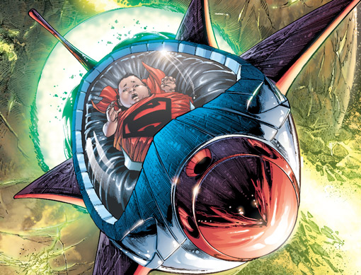

Tras estrellarse su nave de Krypton en Kansas,
Clark Kent fue criado por los Kent en una granja de Smallville.
Bajo su guía, aprendió a controlar sus nacientes superpoderes y
adoptó los valores de justicia y humildad que lo definirían como héroe. Inicio Adolecencia Adultez